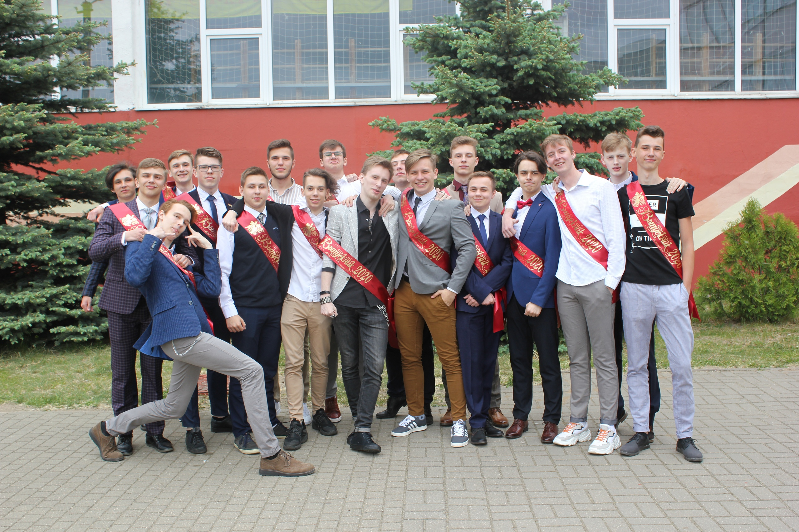

| | | Главная | | | Семья | | | Хобби | | |
|
Меня зовут Илья, и на данный момент мне 17 лет. Родился и рос в городе Жодино Минской области. Учебным заведением, в которое я ходил, была Гимназия № 1 г. Жодино. В школьное я время увлекался такими предметами как английский язык и география. По последнему из них даже умудрился войти в запас республиканской команды в 11 классе. |
| Однако это не определило мое дальнейшее поступление. Окончив школу в 2020 году, я выбрал математическое направление, и мой выбор пал на Факультет прикладной информатики и информатики БГУ. О своем выборе я не жалею и считаю, что БГУ - прекраснейшее место. |  |